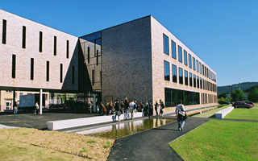

Über mich
Hier kommt ihr auf meine anderen Seiten.

Mein Hund und ich:)
Hallo, ich heiße Chanida und bin 19 Jahre alt. Ich komme aus Hechingen, direkt unter der Burg Hohenzollern. Für das Studium bin ich nach Furtwangen gezogen.
Fotografie
Ich mache sehr gerne Bilder von meinem Hund Bella.

Hier studiere ich
Hier auf Youtube gibts ein paar Videos.
Man kann an der HFU echt coole Studiengänge studieren! Schaut mal vorbei.
Andere Studierende
Hier könnt ihr euch noch andere Websites anschauen
NesliCaro
Verena